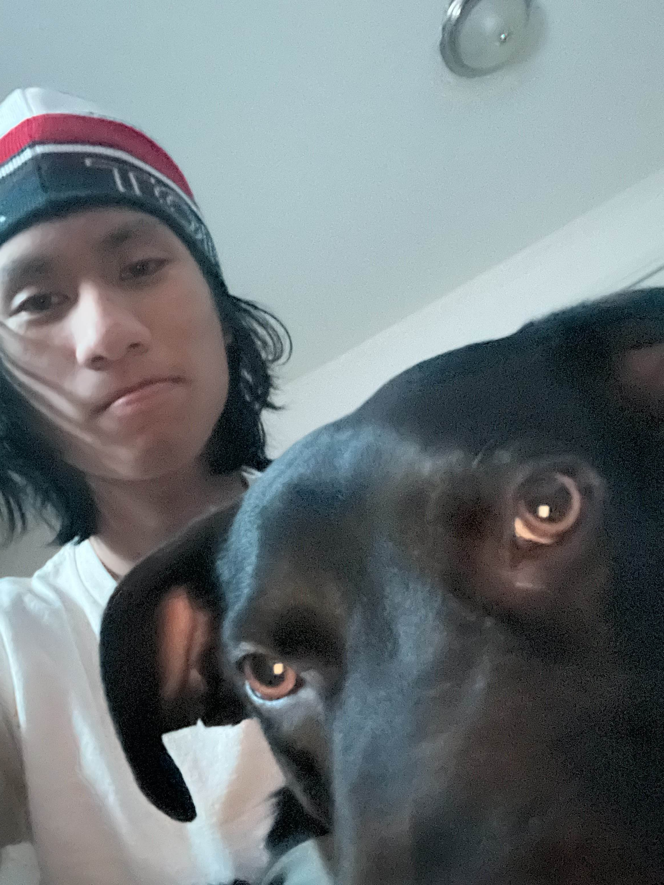

Hello!!! Welcome to my website for CSCE-331! üòÅ
My name is Junyi, and I am a junior majoring in Computer Engineering üíª with a minor in MathematicsüßÆ! And I am studying at Texas A&M in College Station üòº
I am currently taking the following courses this semester (Spring '25):
- CSCE 331 - Foundation in Software Engineeringüíª. A class that focuses on large scale software development, such as full stack web development.
- CSCE 469 - Advanced Computer Architectureüíª. The sequel to my Computer Architecture class that focuses on memory designs, piepine techniques, and parallel structures!
- ECEN 749 - Microprocessor Systems Designüíª. A class that focuses on microprocessors, covering topics such as 16/32-bit computer hardware, serial and parallel I/O interfacing, and memory circuits designed for no-wait-state operation.
- MATH 414 - Fourier Series and Waveletsüíª. A class that focuses on fourier transform with applications in data compressions and signal processing.
I chose this major because when I was little I was passionate about electronics. As you can see from the courses above, many are about digital electronics and the architecture design align with my interests. These courses will provide me with a strong fundamental and will be essential for what I want to do in the near future.
Hobbies:
Jogging/Running Hiking

This is me and my dog in winter of 2022.